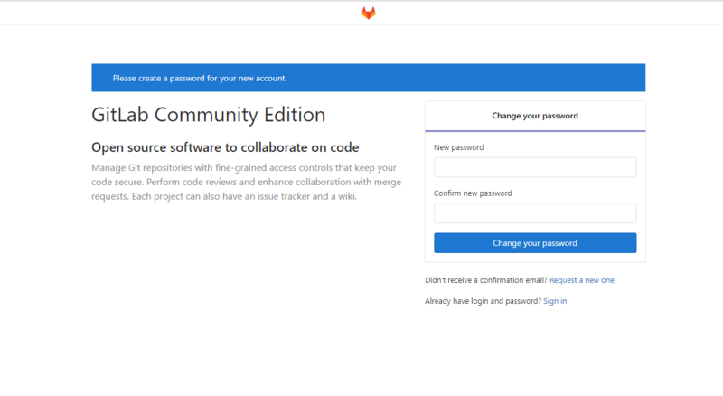

CentOS 7 下 GitLab安装部署教程
安装和配置一些必须的依赖
1、基础依赖
1 | 安装技术依赖 |
2、安装Postfix
Postfix是一个邮件服务器，GitLab发送邮件需要用到1
2
3
4sudo yum install postfix
启动postfix并设置为开机启动
sudo systemctl enable postfix
sudo systemctl start postfix
下载安装包&&安装
gitlab-ee：企业版，部分功能是需要收费的
gitlab-ce：社区版，免费的
这里部署的是社区版，如果要部署商业版可以把关键字替换为：gitlab-ee
1、下载安装包
1 | curl https://packages.gitlab.com/install/repositories/gitlab/gitlab-ce/script.rpm.sh | sudo bash |
2、安装
1 | sudo yum install -y gitlab-ce |
看到控制台上出现下面内容，就算是安装成功了
3、配置Gitlab站点的Url
例如：https://gitlab.example.com 或 http://gitlab.example.com，配置https需要配置证书
1 | gitlab相应常用命令 |
如果不配置，那你可以直接启动Gitlab：gitlab-ctl start，直接使用ip访问：http://ip:8080/，默认80端口
GitLab默认的配置文件路径是/etc/gitlab/gitlab.rb
默认的站点Url配置项是：external_url 'http://gitlab.example.com
1 | 修改配置文件 |
启动并访问Gitlab
1 | 重新配置并启动 |
在浏览器上访问：http://gitlab.xuguoqian.com

密码设置成功后，就可以以默认用户：root + 设置好的密码，进行登录。
异常问题
1、安装过程的出错
确保网络正常和服务器内存充足就行，We also strongly recommend at least 4GB of RAM to run GitLab，这是官网对我们友好的提醒，其实2GB的RAM也是勉强能运行的起来的。
2、访问的出错
新手很容易出现：
原因1：内存不足，最小2G，企业级的至少4G以上
2G时，也只是偶发正常，如果是个人学习的，没条件只有2G的，又想运行玩一玩Gitlab，可以考虑一下swap：1
2
3Swap分区在系统的物理内存不够用的时候，把硬盘内存中的一部分空间释放出来，以供当前运行的程序使用。
那些被释放的空间可能来自一些很长时间没有什么操作的程序，这些被释放的空间被临时保存到Swap分区中，
等到那些程序要运行时，再从Swap分区中恢复保存的数据到内存中。
swap的值都是安装系统的时候设置好的，一般设置为内存的两倍大小。使用过程中发现swap值过小只能添加。
用free -m命令查看当前swap大小
1 | 使用下面的命令创建2G的空间 |
free -m查看swap已经增加了，但这只是临时性的，如果机器重启会失效1
2
3
4vi /etc/fstab
最后一行添加
/var/swap swap swap defaults 0 0
重启或free -m测试 swap添加成功
实战命令：
原因2：端口冲突，默认8080端口，更改默认端口
配置文件在 /opt/gitlab/etc/gitlab.rb 。这个文件用于gitlab如何调用80和8080的服务等。
下面修改为8082端口1
2
3## Advanced settings
unicorn['listen'] = '127.0.0.1'
unicorn['port'] = 8082
1 | nginx['listen_addresses'] = ['*'] |
1 | 每次重新配置，都需要执行sudo gitlab-ctl reconfigure |
一般都能正常访问！